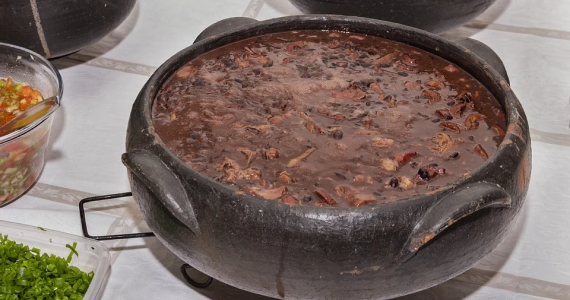
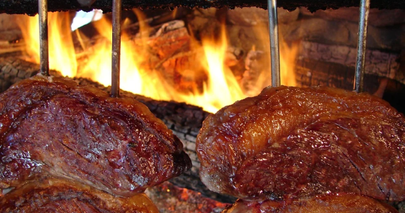

We prepare food to impress you.
We also have an awesome place where you
can eat and have a nice time.
Menu

Feijoada
Feijoada is a stew of beans with beef and pork.
The basic ingredients of feijoada are beans with fresh or
beef. In Brazil, it is usually made with black beans
(feijoada à brasileira). The stew is best prepared
over low heat in a thick clay pot.
Churrasco
Churrasco is the Portuguese and Spanish name for beef or
grilled meat more generally. It is a prominent
feature in the cuisine of Brazil, Uruguay and Argentina.

Pão de queijo
Pão de queijo or Brazilian cheese bread is a small, baked cheese
roll or cheese bun, a popular snack and
breakfast food in Brazil. It is a traditional Brazilian recipe,
originating in the state of Minas Gerais.